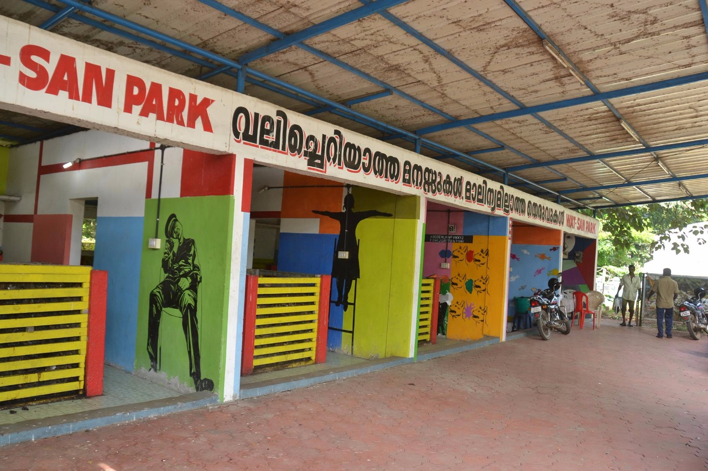
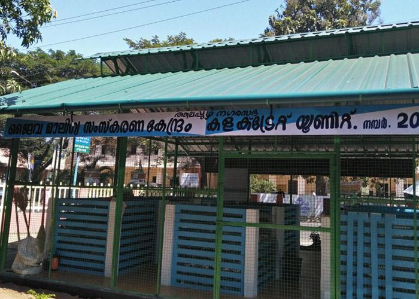
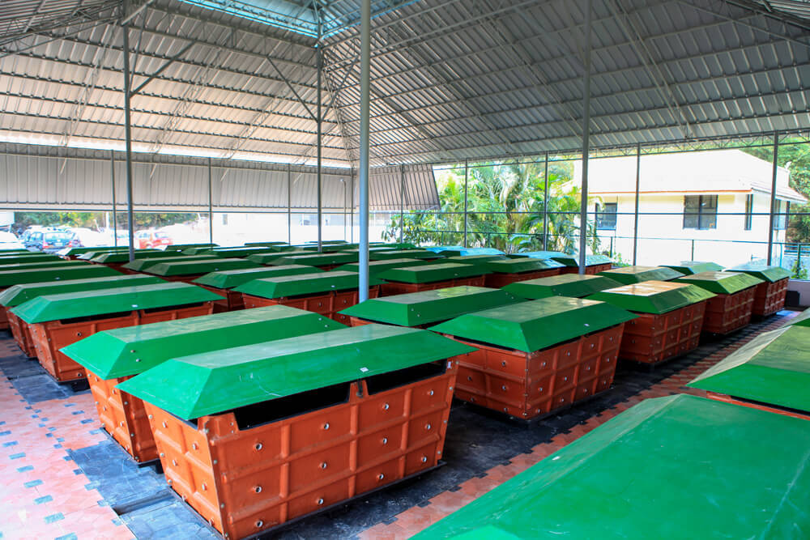
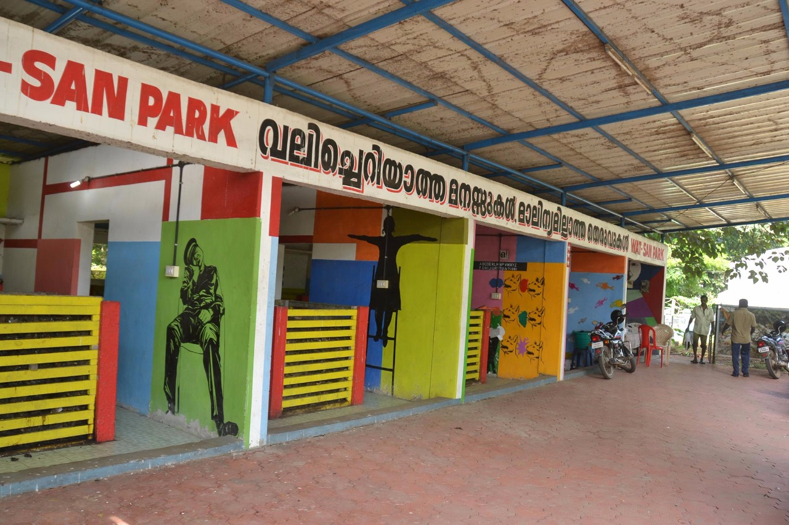
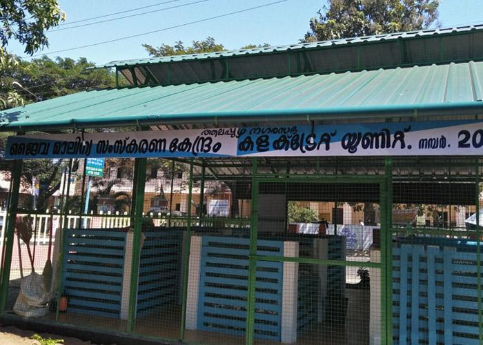
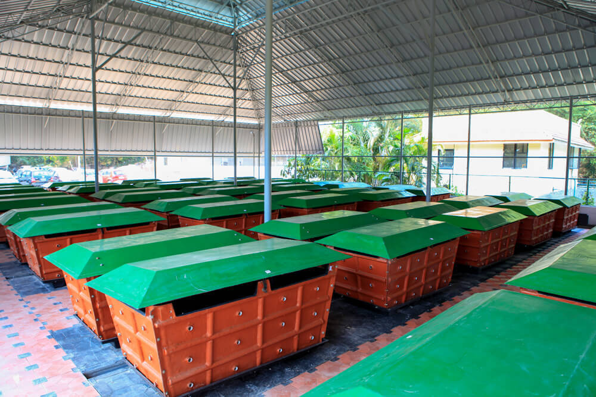
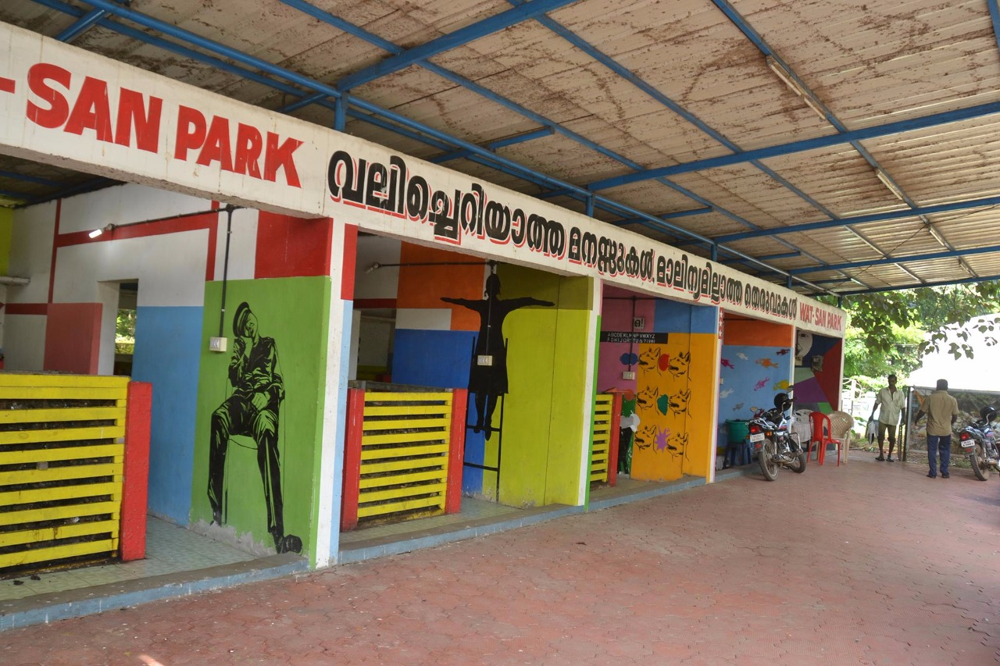
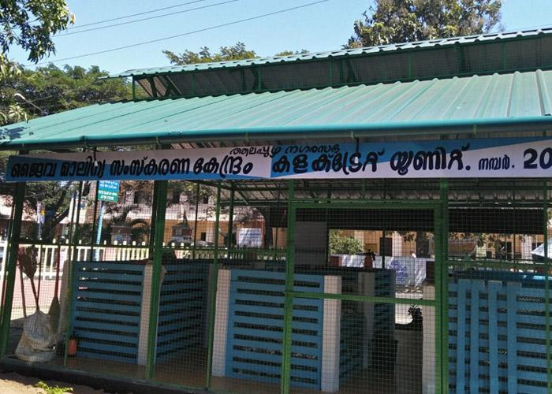
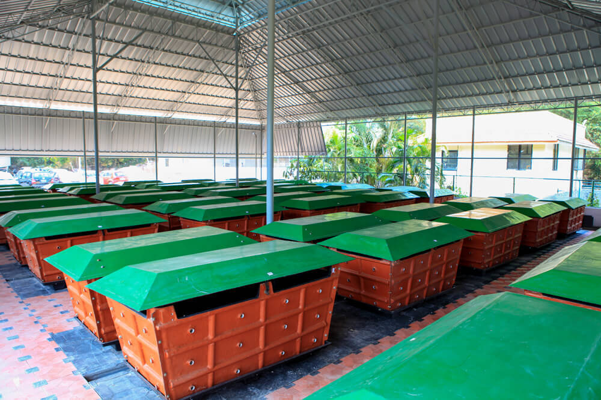

With the aim to clean and beautify Dhaka



The ineffiecient and irresponsible method of waste disposal in those past few years have turned the once clean and beautiful places stinky,ugly and unhealthy.
we with the Go Recycle project aim to get this situation fixed and forming a technical support
group for the Dhaka Municipality Wet waste collection or
direct disposal at a designated Vermicompost plant at some of spaces in that ward will ensure proper disposal of the waste and also lessen the burden of landfills.
Single use plastic and other plastic waste are seen to be dumped by the roads or are burnt leading to air pollution . We have thought of installing various waste
collection points where the citizen can be guided to responsibily deposit the waste and ensure proper disposal
of the same.Waste collection vehicles would
also be employed for this purpose which will collect the foof waste generated at your home from your doorstep.These vehicles will directly bring the waste to
our collection centres where a service provider staff will be employed to take care of proper treatment og these waste into the plants and their operating. The
capacity of the plant to be decided by the municipality. Proper training regarding all safety measures and the working of the plant will be made available to the
service staff. They will be employed as per government rules in the category of MTS and paid well also with health allowance .
Service staff will also be a part of the pf scheme.No contract will be given to private parties
to ensure the quality of the project is intact.